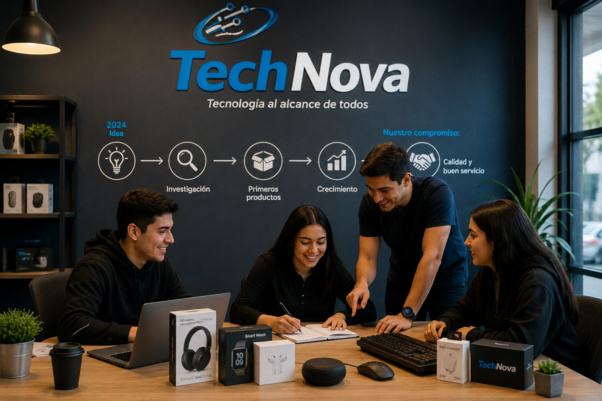

TechNova fue creada en el año 2024 como un proyecto de jóvenes interesados en la tecnología. Al principio solo vendíamos accesorios para computadoras a familiares y amigos, pero poco a poco más personas comenzaron a conocer nuestros productos.
Con el paso del tiempo decidimos ampliar nuestro catálogo e incluir audífonos, teclados, mouse, cargadores y otros accesorios tecnológicos. Nuestro objetivo siempre ha sido ofrecer productos de buena calidad a precios accesibles.
Actualmente seguimos creciendo y buscamos brindar un buen servicio a nuestros clientes, además de mantenernos actualizados con las nuevas tecnologías.
TechNova
Tecnología al alcance de todos.